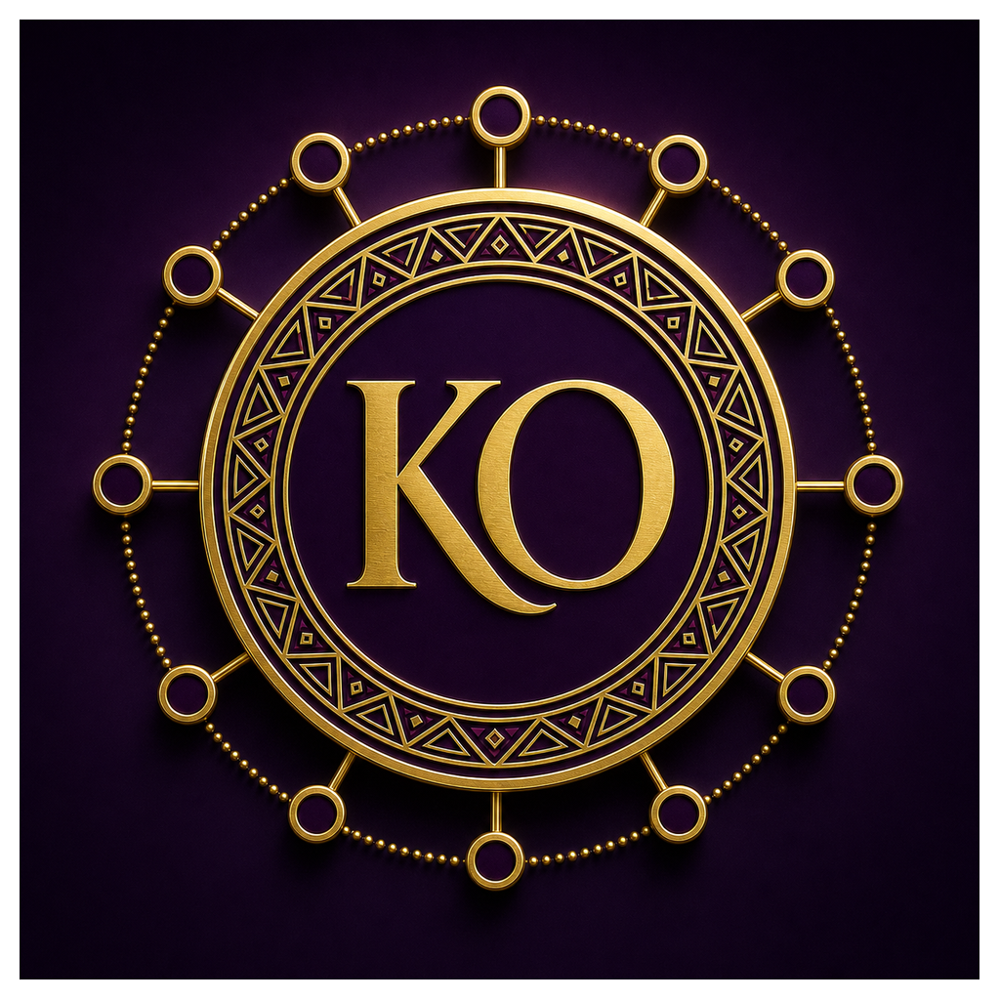

Kap Ossen · Draft V1 Motion Laboratory
Heritage with a controlled future pulse.
The 3D crest performs one restrained ceremonial lift, landing and settle after a long rest. Hover or focus pauses the motion. Reduced-motion settings receive a fully static emblem.

≈1.1s active
8s+ rest
Hover/focus pause
Reduced-motion safe
No continuous spin